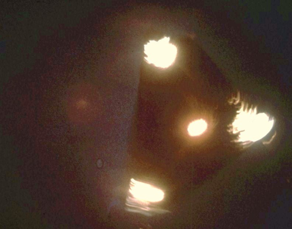

Esetek
A roswelli titok
1947 júliusában egy szokatlan esemény rázta meg az amerikai Roswell városát. Egy viharos
éjszakát követően egy helyi farmer furcsa törmeléket talált a birtokán – fényes, különös anyagot, amely nem
hasonlított semmilyen általa ismert tárgyhoz. A hatóságok gyorsan megjelentek, és elszállították a
maradványokat. Bár eleinte azt állították, hogy egy időjárási léggömb zuhant le, később újabb nyilatkozatok
szivárogtak ki, amelyek egy „repülő csészealjat” említettek.A hír megjelent a városi lapban, a Roswell Daily
Record-ban is. Ugyanez a lap egyik alkalommal aztán szintén repülőcsészealjról cikkezett, mint a sacramentói és
néhány másik újság. A roswelli eset azóta a földönkívüli élet
legnagyobb rejtélyei közé tartozik, és számos elmélet született arról, mi is történt valójában azon az éjjelen.


A rendőr találkozása Arizonában
1966 egy csendes éjszakáján egy arizonai rendőr, Lonnie Zamora járőrözött a sivatag szélén, amikor szeme
sarkából erős fényt látott a horizonton. A Először azt hitte, hogy egy autó állt félre, talán műszaki hibával.
Ahogy közelebb ért, rádión jelentette a központnak, hogy kivizsgálja az ügyet. Azonban amikor leállította a
motort, a vibráló fény hirtelen elhalványult, és egy szokatlan csend borította be a környéket. A jármű körül
furcsa szimbólumok voltak, és Zamora látni vélt két kis alakot, amelyek gyorsan
eltűntek, mielőtt a tárgy hirtelen felemelkedett és eltűnt az égen. A férfi beszámolóját később független
szakértők vizsgálták, de a történet továbbra is rejtély maradt.
A belga UFO-hullám
1989 novemberében Belgium egén egy sor különös esemény zajlott le. Szemtanúk százai figyelték, ahogy háromszög
alakú repülő tárgyak lebegnek és mozognak hangtalanul az éjszakai égbolton. A belga légierő is észlelte a
jelenségeket, és vadászgépeket küldtek, hogy kövessék őket. Bár a radarok pontosan érzékelték a tárgyakat, azok
olyan manővereket hajtottak végre, amelyek lehetetlenek lettek volna ember alkotta repülőgépekkel. A belga
kormány később megerősítette az eseteket, de hivatalos magyarázatot nem adtak.A belga UFO-hullám így maradandó
nyomot hagyott a modern ufológiában, és továbbra is az egyik legmegmagyarázhatatlanabb és legjobban dokumentált
esetként tartják számon a világ minden táján.


A Phoenix-fények
1997-ben Arizona felett több ezer ember ugyanazt a furcsa látványt figyelte meg: hatalmas, V-alakú fények
sorakoztak az égen, amelyek hangtalanul siklottak át az állam felett. Az eseményt több városból is látták, és
rengetegen készítettek videófelvételeket róla. A hivatalos magyarázat szerint a fények csupán katonai jellegű
rakéták és gyakorlatozó repülőgépek voltak, amelyek egy késő esti gyakorlat során kerültek az arizonai égre. A
légierő szerint ezek a gyakorlatok meglehetősen rutinjellegűek, és nincs ok különleges magyarázatot keresni.
Azonban sok szemtanú ezt a magyarázatot nem találta kielégítőnek. Többen azzal érveltek, hogy a látott fények és
a katonai fegyverek mozgása teljesen eltérő volt, ráadásul az éjszakai csendben hallgatólagos áthaladás is vadul
ellenkezett a megszokott repülőgépek zúgó zajával A Phoenix-fények máig az egyik legjobban dokumentált
UFO-esetnek
számítanak.
A Rendlesham-erdő incidense – Anglia
1980 decemberében az angliai Rendlesham-erdőben, amely a
brit és amerikai katonai bázisok közelében helyezkedik el, egy sor megmagyarázhatatlan esemény történt. Két
amerikai katonát küldtek az erdőbe, miután különös fények jelentek meg az égbolton. A katonák egy fényesen izzó,
háromszög alakú tárgyat találtak, amely hangtalanul lebegett a fák között.
Egyikük, Jim Penniston, megközelítette az objektumot és azt állította, hogy megérintette a felületét, amelyen
furcsa szimbólumokat látott. A tárgy hirtelen eltűnt, de az események ezzel nem értek véget. Másnap a katonák
ismét fényeket láttak, és radarjelentések is megerősítették, hogy valami rendkívül gyorsan mozgott a térségben.
Később Penniston különös bináris kódokat kezdett felidézni, amelyeket állítása szerint az UFO-val való
találkozás során "kaptak" az agyába.